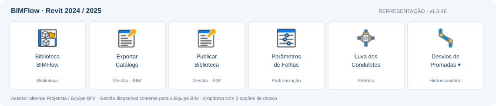
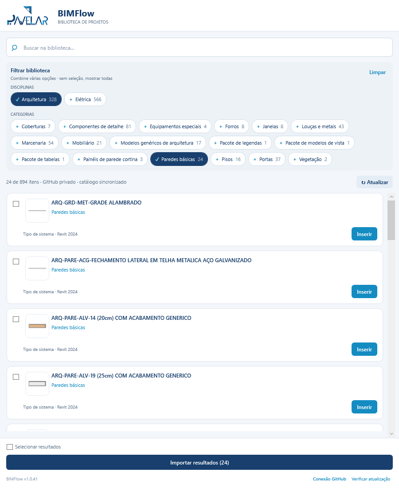
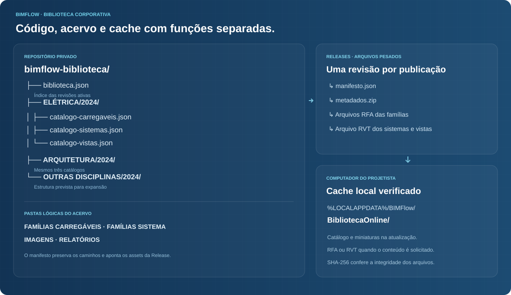

RVT aprovado
Qualquer nome e pasta, com as alterações salvas.
O BIMFlow reúne busca, importação e publicação de conteúdo Revit. Elétrica e arquitetura iniciam uma estrutura que pode ser mantida e ampliada pela equipe BIM.
O fluxo online está implementado no código v1.0.41. A última release publicada do plugin é a v1.0.39. A instalação e a homologação da nova DLL no Revit são etapas distintas da migração dos arquivos.
Quantidades conferidas nos catálogos exportados. Cada tipo é uma opção Revit; tabelas, legendas e modelos são reunidos em pacotes.
| Conteúdo | Elétrica | Arquitetura | Como aparece no painel |
|---|
Elétrica tem 7 tipos de eletrodutos e 4 de eletrocalhas. Modelos de vista também são suportados em elétrica, mas ainda não constam no pacote elétrico migrado; entram na próxima exportação dessa disciplina.
Leia a primeira linha da esquerda para a direita e a segunda no sentido inverso. Os filtros destacam as etapas sem apagar o caminho.
O setor BIM prepara o conteúdo. Os projetistas consultam o catálogo online e baixam apenas os modelos necessários para o computador.
Qualquer nome e pasta, com as alterações salvas.
RFAs, RVT, JSONs, imagens e relatório são gerados e validados.
Catálogos no repositório; arquivos pesados nas Releases.
Lista e miniaturas primeiro. RFA ou RVT baixado sob demanda.
Importação e solicitação da ferramenta de inserção.
A publicação é montada em rascunho. Depois do envio e das conferências, um único commit atualiza o índice e os catálogos. Falhas não devem substituir a revisão ativa.
Arquivos baixados são conferidos por SHA-256. O cache permite reutilizar conteúdo já recebido; sem uma primeira sincronização, não há biblioteca offline.
As credenciais ficam no Gerenciador de Credenciais do Windows, por usuário do computador. O painel tem a opção Conexão GitHub.
Leitura para projetistas; publicação para o setor BIM. O token precisa ter acesso ao repositório privado. Nenhum token deve entrar no código, no JSON do catálogo ou no site.
O painel concentra busca e importação. Os comandos de gestão ficam separados das ferramentas de padronização.

| Painel | Comando | Finalidade |
|---|---|---|
| Biblioteca | Biblioteca BIMFlow | Buscar, filtrar, selecionar, importar e iniciar a inserção do conteúdo. |
| Gestão da biblioteca | Exportar Catálogo | Preparar a disciplina e, opcionalmente, publicar a revisão no GitHub. |
| Gestão da biblioteca | Publicar Biblioteca | Enviar um pacote local já exportado, sem processar o RVT novamente. |
| Padronização | Parâmetros de Folhas | Carregar ou verificar os parâmetros compartilhados corporativos de folhas. |

Gravação do piloto anterior à integração GitHub. Serve como referência do fluxo de busca e inserção; os rótulos e comandos atuais estão descritos acima.
Use os procedimentos abaixo para trabalhar no projeto, atualizar o acervo e manter a solução.
Se o tipo exigir hospedeiro, vista compatível ou desenho de contorno, o Revit solicitará essa interação. O painel não elimina essas condições de criação.
A publicação exige credencial com permissão de escrita. Se o envio falhar, o pacote local pode ser reenviado; não é necessário repetir toda a exportação.
A release do plugin e as revisões da biblioteca são independentes. Publicar uma DLL não atualiza os catálogos e publicar famílias não troca a DLL dos usuários.
As responsabilidades são separadas para manter código, acervo e documentação sem misturar os arquivos pesados.
Solução C#, interface, importadores, exportador, testes e publicação da DLL.
02 · ACERVO PRIVADOÍndice, catálogos por disciplina e revisões com RFAs, RVTs e metadados.
03 · DOCUMENTAÇÃOEste guia e o dashboard de telemetria, publicados no GitHub Pages.

%LOCALAPPDATA%\BIMFlow\Exportacoes\ ├── ELÉTRICA\2024\ │ ├── FAMÍLIAS CARREGÁVEIS\CATEGORIA\ │ ├── FAMÍLIAS SISTEMA\ │ ├── IMAGENS\ │ ├── RELATÓRIOS\ │ ├── BACKUPS\ │ ├── catalogo-carregaveis.json │ ├── catalogo-sistemas.json │ └── catalogo-vistas.json └── ARQUITETURA\2024\ (mesma estrutura) Cache do projetista: %LOCALAPPDATA%\BIMFlow\BibliotecaOnline\
O Drive foi usado como origem da migração. No fluxo online preparado, ele não é necessário no computador do projetista.
BIMFlow.Extension/
├── Commands/
│ ├── Biblioteca/
│ ├── Catalogo/
│ └── Padronizacao/
├── Models/
│ ├── Biblioteca/
│ └── Catalogo/
├── Services/Biblioteca/
│ └── Online/
└── UI/
└── Biblioteca/
BIMFlow.Library.Tests/
└── testes do fluxo onlineA organização acompanha a responsabilidade do recurso. Novos comandos do plugin legado devem seguir essa divisão.
| Informação | Exemplo | Uso |
|---|---|---|
| Disciplina e versão | arquitetura · 2024 | Separar conteúdo e compatibilidade. |
| Identidade do item | id · tipoOrigemUniqueId | Distinguir tipos, inclusive quando têm o mesmo nome. |
| Nome, família e categoria | Parede básica · paredes | Exibir cartões, filtros e busca. |
| Tipo de conteúdo | carregavel · sistema · pacote | Escolher o fluxo de importação. |
| Arquivo e miniatura | Caminhos relativos de RFA/RVT e imagem | Encontrar o conteúdo sem depender da pasta original. |
| Palavras-chave e membros | Termos de busca · nomes de vistas | Pesquisar e importar os pacotes. |
| Configurações suportadas | Padrão e diâmetros de eletrodutos | Validar os dados específicos da categoria. |
{
"versaoCatalogo": 1,
"disciplina": "arquitetura",
"revitVersaoArquivo": "2024",
"arquivo": "FAMÍLIAS SISTEMA/Biblioteca aprovada.rvt",
"itens": [{
"id": "paredes_identificador-unico",
"nome": "Parede de alvenaria 19 cm",
"nomeTipoRevit": "Parede de alvenaria 19 cm",
"familia": "Parede básica",
"tipoConteudo": "sistema",
"categoria": "paredes",
"imagem": "IMAGENS/parede.png",
"palavrasChave": ["alvenaria", "parede"]
}]
}Exemplo explicativo. Os IDs e os caminhos válidos são gerados pelo exportador; não usar este trecho como catálogo de produção.
As próximas atividades organizam a operação corporativa e a evolução do plugin.
Uma compilação bem-sucedida não substitui a validação no Revit.
Paredes básicas de camadas uniformes são elegíveis. Paredes cortina/empilhadas, composições não homogêneas ao longo da altura e decks estruturais permanecem fora desta fase. As comparações de materiais não certificam todos os assets de aparência ou propriedades físicas.
Os tipos existentes são preservados. Divergências detectadas nas configurações ou composições dos sistemas interrompem e revertem o lote. Revisar o tipo ou material no destino antes de repetir.
Legendas precisam de uma legenda base compatível no projeto de destino. Modelos de vista não exigem essa base. Os modelos são disponibilizados, mas sua aplicação às vistas é uma escolha do usuário.
Conferir a credencial e a revisão publicada. O catálogo antigo fixo no D: foi removido: a falta da biblioteca deve ser informada, sem mostrar itens do piloto como se fossem dados atualizados.
O código compila para Revit 2024 e 2025. A exportação de arquitetura e seus 24 tipos de parede foram conferidos no catálogo real. A nova integração online, modelos de vista e inserções precisam ser homologados nos projetos e versões de Revit usados pela equipe.